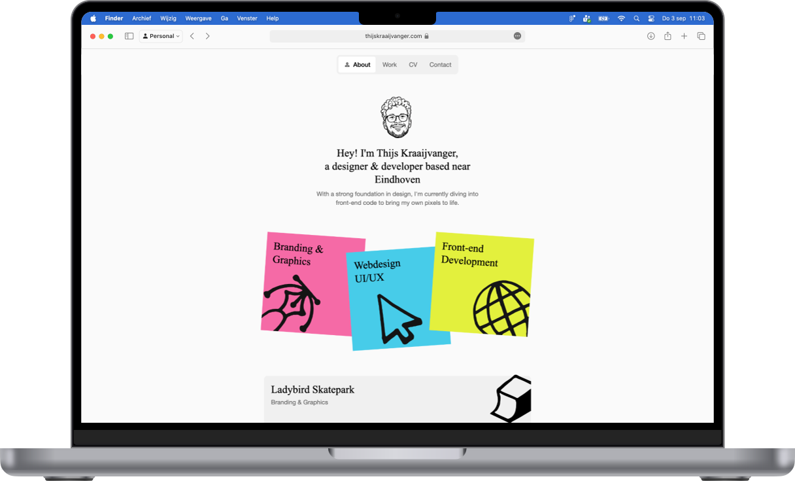
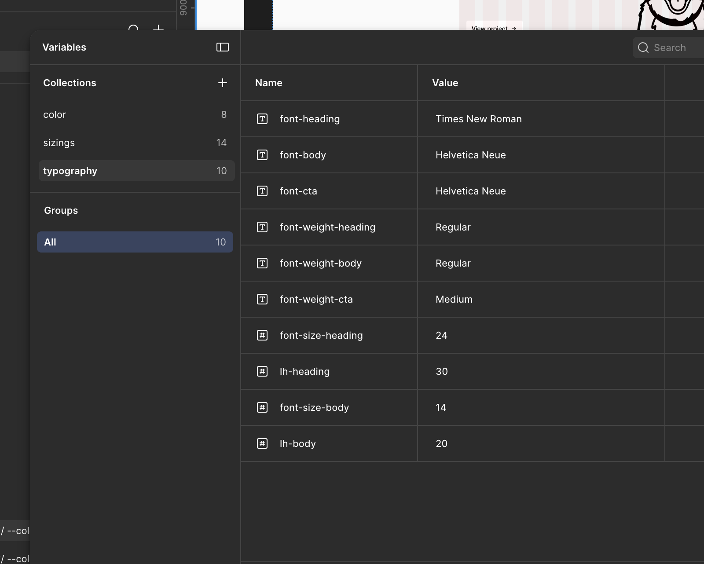
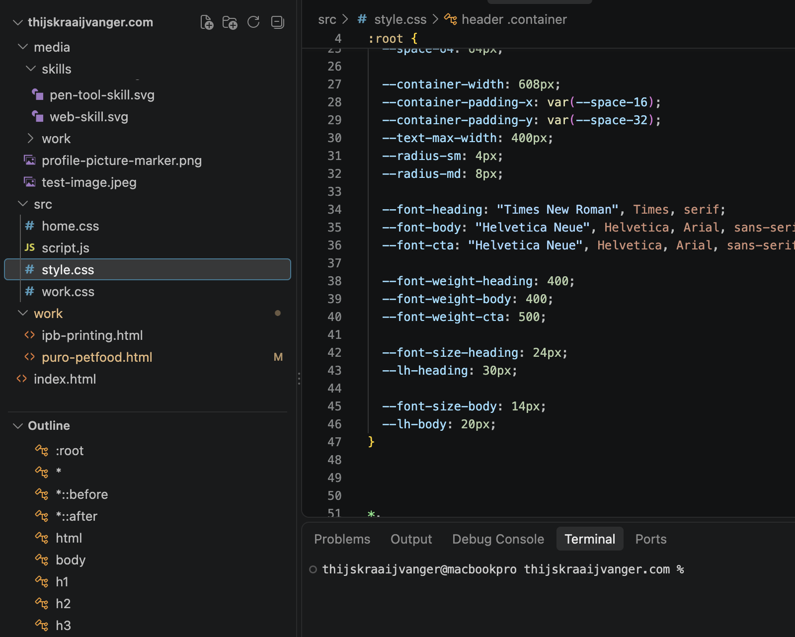
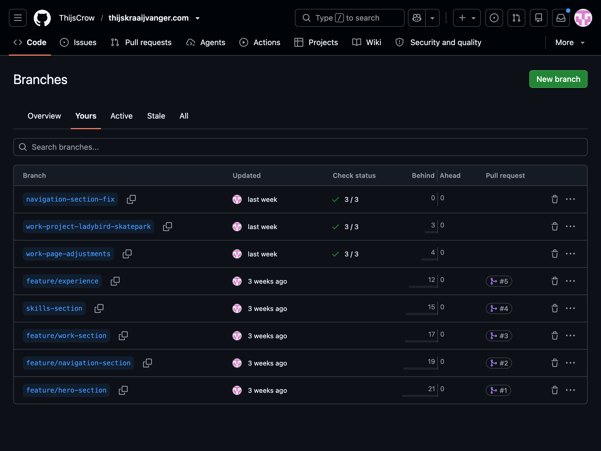
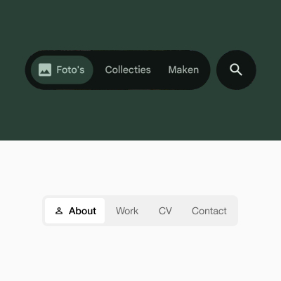

Ladybird Skatepark
Branding & Graphics

Front-end Development
Building a custom responsive developer showcase through structured CSS architecture, Git feature branching, and high-performance micro-interactions.

Transitioning from a pure UI/UX design background into front-end development, the goal was to build my personal showcase portfolio from scratch without relying on heavy frameworks or pre-built templates. The goal was to prove the ability to translate complex design ideas into clean, maintainable, and pixel-perfect code.
To avoid over-reliance on AI generation tools without understanding the underlying code, I focused on mastering modern CSS features, establishing a scalable CSS architecture, and adopting a professional version control workflow with Git and GitHub Pages.


To ensure pixel-perfect fidelity between Figma and code, I established a strict variable system. Primitive tokens (raw colors, spacing scales based on a 4px grid, typography sizes) were mapped directly to semantic CSS Custom Properties inside the :root stylesheet.
For personal branding, I digitized hand-drawn physical marker sketches drawn on real post-it notes into clean vector assets (.svg). Scaling these icons precisely allowed the interactive digital sticky notes to retain an authentic, organic feel while staying crisp across all pixel ratios.
During development, as the main stylesheet grew, I refactored the styling into modular CSS files (style.css, home.css, work.css) to keep codebase maintainability high and specificity low.

To prevent unmonitored code overwrites caused by AI assistance, I moved away from direct-to-main commits and adopted a structured Feature Branching & Pull Request Workflow on GitHub.

To keep the minimalist aesthetic from feeling flat, I implemented subtle micro-interactions across the interface:
Branding & Graphics